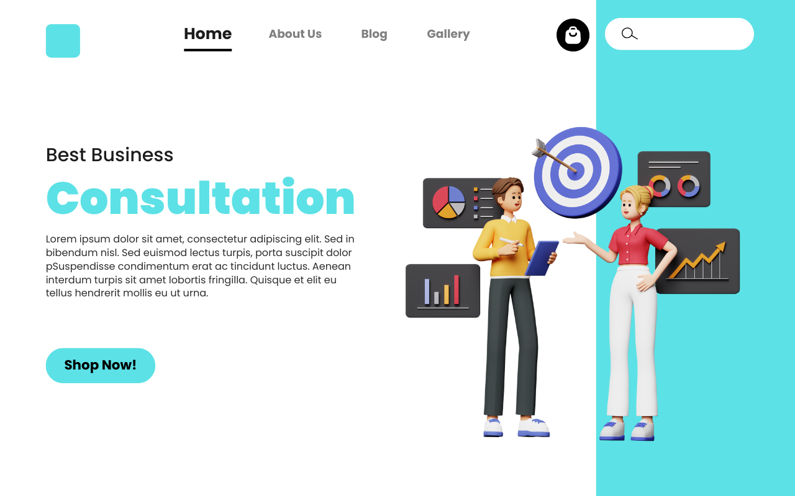

Meus Projetos

Landing Page
Desenvolvimento de uma Landing Page moderna e responsiva, com foco em engajamento e conversão. Estrutura completa em HTML, CSS e Tailwinde seções estratégicas.
Site Institucional
Desenvolvimento de um Site Institucionalmoderno e responsivo, com identidade visual alinhada à marca. Estruturação de páginas essenciais como e Home, Sobre, Serviços e Contato, utilizando HTML, CSS e Tailwind. Projeto focado em usabilidade, performance e presença digital profissional. Inclui conteúdos otimizados e integração com redes sociais e formulários de contato.


E-Commerce
Desenvolvimento de um E-commerce moderno e responsiva, com foco em engajamento e conversão. Estrutura completa em HTML, CSS e Tailwinde seções estratégicas.